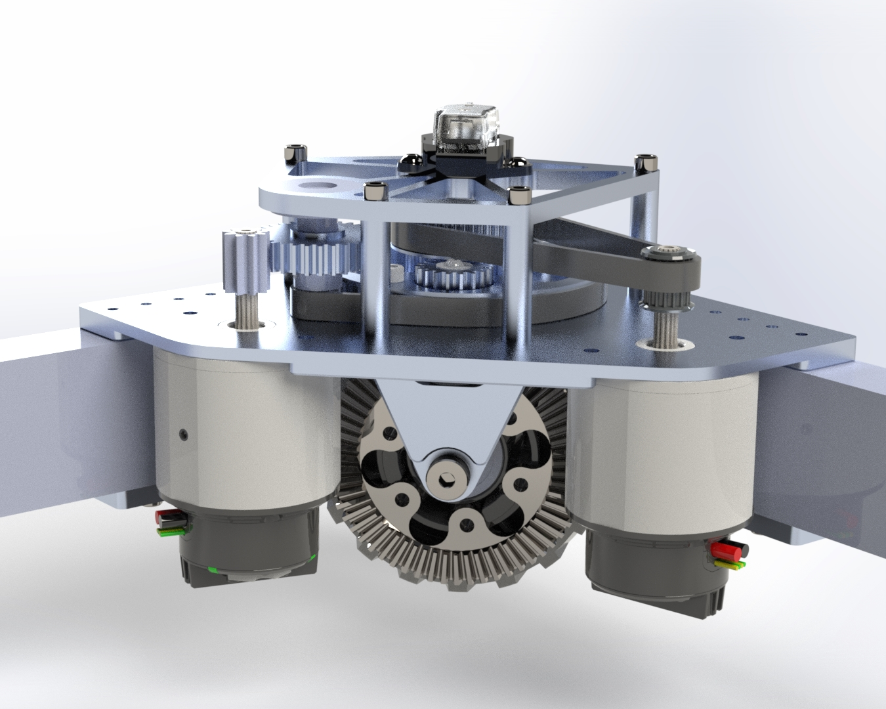

This project is an extension of the "Swerve project" with a different goal, performance over all else. CNC milling is heavily leveraged to reduce part count and tolerance stack up.
This swerve module allows a robot to translate in two axis. Utilizing 8 motors spread along 4 modules, a 4-inch wheel can be rotated, such that translational and rotational movement can be achieved with the coordination of the modules.

This sheet shows the motor info for the drive output.This sheet calculates gear ratios, torque, free speed and more. It also assists in keeping track of hard like gear teeth, pitch, and bore. A key feature in this document is “Wheel Slip” it ensures our motors do not stall even if the vehicle is stalled. This protects motors and prevents blowing breakers.
Two different configurations based off the same inner workings expand our use cases, with minimal change. The inverted motor design reduces height, this reduction also limits wheel clearance. With a plate change and belt change we can increase our wheel clearance incase obstacles are present.


The coaxial shaft design is what sets this module apart from its counter parts. The inner shaft is keyed to the steering pulley, it indexes the position of the output at a 1:1 ratio. This is suitable for absolute encoding. The magnet at the top of this shaft is the hall effect encoder magnet. The outside of this shaft is a ½” hex, which is the second stage of the drive gearbox. The concentric design allows them to both spin at varying speeds and positions without interference. As you can see from the photo above the thin shaft is indexed by putting a hex into a triangular cutout(this shape is suited well for CNC milling), at the top of the shaft you can also see the encoder magnet. Below that image is the outer shaft and the bushings it rides on.